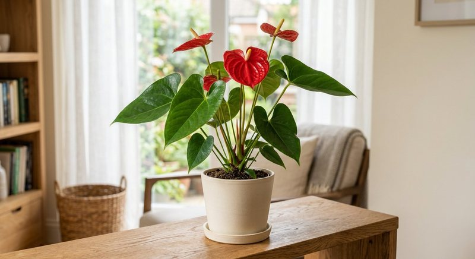

Виды растений · 5 мин чтения
Удобрение для антуриума: как подкармливать мужское счастье дома
Антуриум ценит яркий рассеянный свет, воздушный субстрат и стабильную влажность. Подкормка поддерживает рост только тогда, когда корни здоровы и не сидят в плотной мокрой смеси.
Материал обновлён 24.10.2026 · Справочная информация, не заменяет инструкцию на упаковке.

Корням антуриума нужен воздух, а не только питание
Многие комнатные антуриумы близки к эпифитным растениям: их корни лучше работают в рыхлой структуре с доступом воздуха. Тяжёлый уплотнившийся субстрат долго остаётся мокрым, и листья могут желтеть при формально регулярных подкормках. Перед сменой удобрения выньте горшок из кашпо, проверьте сток и оцените, не превратилась ли смесь в плотную массу без крупных фракций.
Яркий рассеянный свет поддерживает и листья, и цветение. В тени антуриум может жить, но новых покрывал будет меньше. Прямое жёсткое солнце, напротив, способно оставить светлые ожоги. Сначала найдите стабильное место, затем выстраивайте питание по фактическому приросту.
Полив, влажность и накопление солей
Субстрат увлажняют по мере просыхания верхнего слоя с учётом состава смеси и размера горшка. Нельзя ориентироваться только на календарь: кора и рыхлые компоненты просыхают иначе, чем плотный торфяной грунт. После полива вода не должна оставаться в декоративном кашпо. Сухие кончики при мокром субстрате — повод проверить корни и соли, а не увеличивать объём раствора.
Если белый налёт появляется на поверхности и состояние ухудшается после подкормок, остановите схему и разберитесь в причине. Повреждённая ткань листа не восстановится, поэтому оценивайте новый рост. Порядок действий при избытке солей совпадает с материалом о перекорме удобрением.
- субстрат рыхлый и не пахнет затхлостью;
- вода свободно выходит из дренажных отверстий;
- свет яркий рассеянный, листья не обжигаются;
- растение выпускает новые листья или цветоносы;
- дата и концентрация прошлой подкормки записаны.
Как вносить удобрение в период активного роста
Используйте средство для комнатных или цветущих растений строго по норме. При появлении цветоноса не делайте раствор крепче и не добавляйте второй комплекс «для бутонов». Важны суммарная доза и состояние корней. Расчёт жидкого концентрата на лейку проверяйте по статье как развести жидкое удобрение, а сезонный ритм — по материалу о частоте подкормок.
Семяздрав указан продавцом для комнатных растений и цветов; применение для антуриума определяйте по актуальной этикетке и реакции конкретного растения. Если субстрат новый и уже содержит питание, дополнительное внесение может быть преждевременным. Опрыскивание допустимо лишь при разрешённом внекорневом способе и не должно заливать цветки и молодые листья.
Пересадка и воздушные корни без ошибок
Пересаживают антуриум, когда корни освоили горшок или субстрат разрушился и стал задерживать воду. Новый объём увеличивают умеренно, сохраняя воздушную структуру. Воздушные корни не обрезают только из-за внешнего вида и не обрабатывают концентратом отдельно: они не отменяют питание через основную корневую систему. После пересадки первую дозу определяют по заправке смеси и инструкции удобрения.
Если при пересадке обнаружены мягкие тёмные корни, сначала нужна санитарная оценка и восстановление режима влажности. Подкормка не лечит гниль. Подробнее о паузе после смены субстрата рассказано в статье о подкормке после пересадки. Здоровый новый лист после пересадки — более надёжный сигнал возвращения к обычной схеме, чем фиксированное число дней.
Почему антуриум не выпускает новые цветоносы
Проверьте возраст растения, количество света, температуру и размер горшка. Антуриум может наращивать листья после деления или пересадки и не цвести некоторое время. Избыточная подкормка не ускоряет зрелость и не компенсирует тень. Сравните условия с общими причинами из статьи о цветущих комнатных растениях.
Записывайте даты появления листьев и покрывал, место и график питания. Если новые листья нормального размера и цвета, а цветоносов нет, меняйте один фактор за раз — прежде всего свет. Если листья мельчают и бледнеют, проверяйте корни и субстрат. Такая последовательность помогает отличить реальную потребность в питании от проблем среды.
Если антуриум недавно куплен цветущим, не пытайтесь немедленно продлить магазинную картину усиленным питанием. Сначала дайте ему адаптироваться к домашнему свету и влажности, проверьте транспортировочный субстрат и вредителей. Плановую схему начинают по этикетке и состоянию корней.
Частые вопросы
Как часто подкармливать антуриум?
По этикетке выбранного средства в период активного роста. Зимой при слабом свете и остановке прироста график сокращают или ставят на паузу по инструкции.
Можно ли удобрять антуриум во время цветения?
Только если это допускает инструкция. Появление покрывал не является основанием повышать концентрацию или вносить раствор чаще.
Почему у антуриума сохнут края листьев?
Возможны сухой воздух, пересушка, соли, повреждённые корни и неподходящая вода. Проверьте субстрат и историю подкормок; по одному краю диагноз не ставят.
Нужно ли опрыскивать воздушные корни удобрением?
Нет, без прямого указания производителя. Основную схему питания выполняют разрешённым способом для всего растения, а воздушные корни не обрабатывают отдельно.